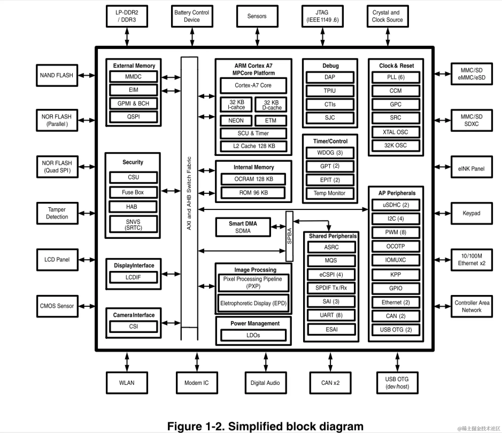
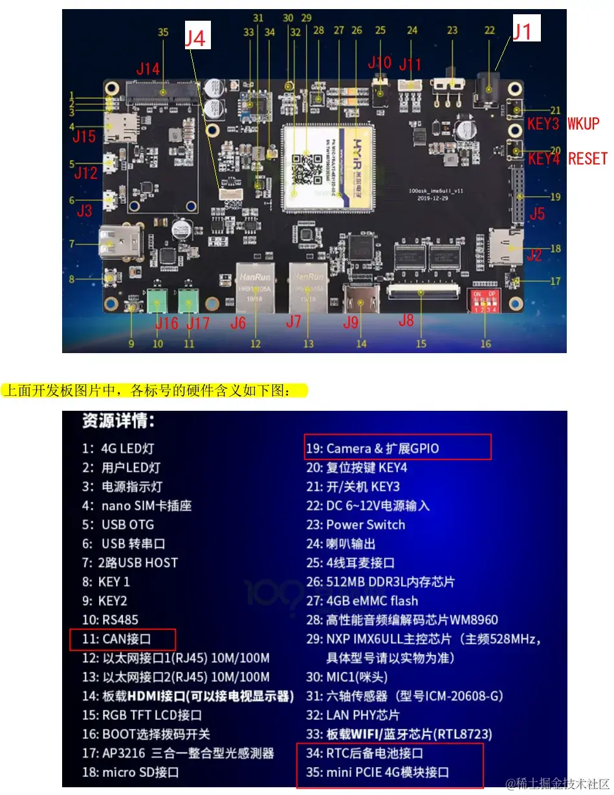
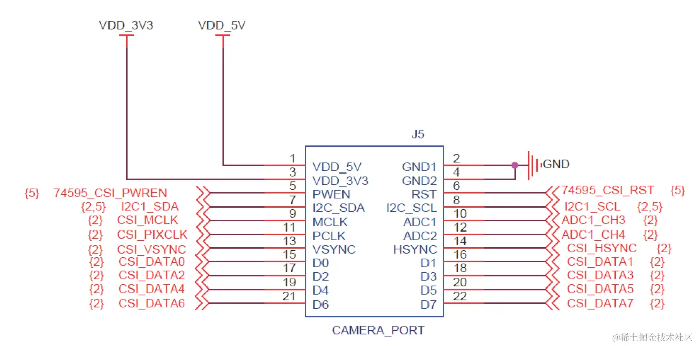
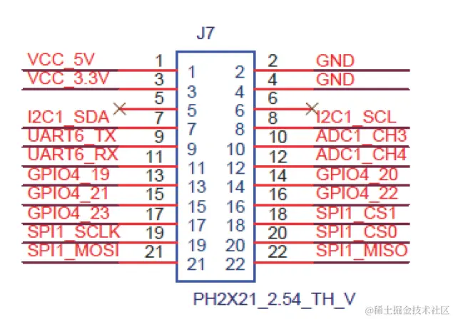
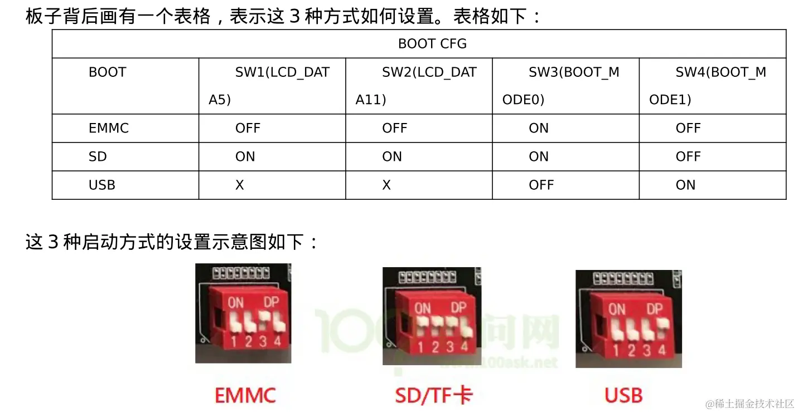
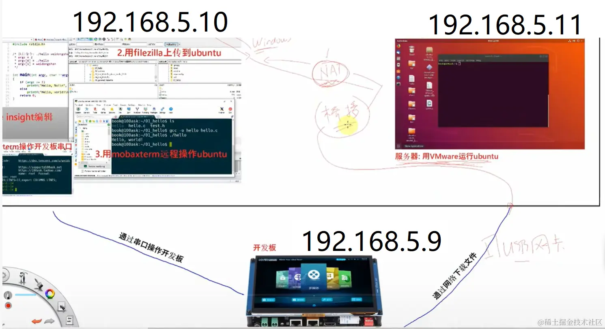
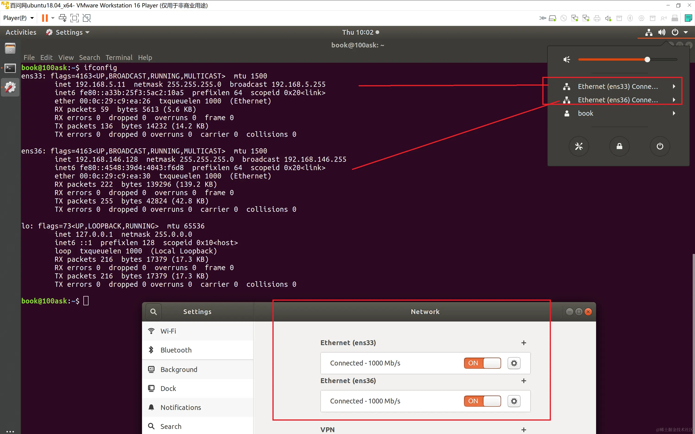
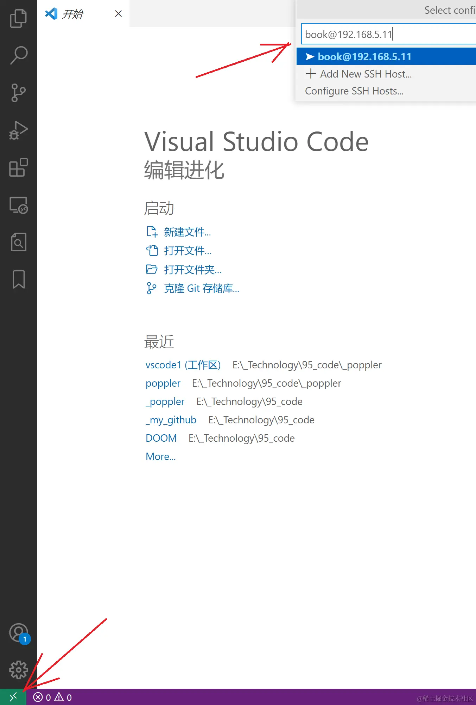
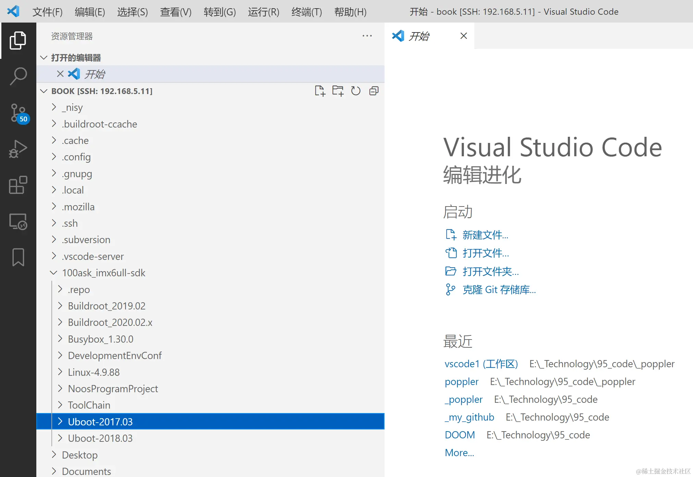

[toc]
备注：下列路径是本人电脑的配置，实际使用请根据自己需要修改。
开发环境
IMX6ULL CPU资源

百问网100ask的imx6ull PRO开发板的接口:  开发板登录名是 root，无需密码
J5插座作为摄像头用时:
 J5插座作为IO扩展时:

在windows+虚拟机环境下开发
在windows +虚拟机环境下开发（参考《第四 A 章 使用 USB 网卡直连配置网络》）
//启动方式如下： 
注意：这个拨码仅仅是uboot的启动，而uboot有可能启动的是sd卡（mmc=0），也考虑启动的是emmc（mmc=1），可以在uboot的环境变量中配置：
=> printenv
baudrate=115200
board_name=EVK
board_rev=14X14
boot_fdt=try
......
......
mmcboot=echo Booting from mmc ...; run mmcargs; if test ${tee} = yes; then run loadfdt; run loadtee; bootm ${tee_addr} - ${fdt_addr}; else if test ${boot_fdt} = yes || test ${boot_fdt} = try; then if run loadfdt; then bootz ${loadaddr} - ${fdt_addr}; else if test ${boot_fdt} = try; then bootz; else echo WARN: Cannot load the DT; fi; fi; else bootz; fi; fi;
mmcdev=1 //原始是mmc=1即emmc启动
mmcpart=2
mmcroot=/dev/mmcblk1p2 rootwait rw //原始是mmc=1即emmc启动
netargs=setenv bootargs console=${console},${baudrate} root=/dev/nfs ip=dhcp nfsroot=${serverip}:${nfsroot},v3,tcp
......
......
Environment size: 2738/8188 bytes
=> setenv mmcdev 0 //改为mmc=0即sd卡启动
=> setenv mmcroot /dev/mmcblk0p2 rootwait rw //改为mmc=0即sd卡启动
=> saveenv
Saving Environment to MMC...
Writing to MMC(0)... done
=>
从开机log可以看到到底是mmc=0即sd卡启动：
U-Boot 2017.03 (Oct 29 2022 - 21:06:24 -0400)
CPU: Freescale i.MX6ULL rev1.1 696 MHz (running at 396 MHz)
CPU: Industrial temperature grade (-40C to 105C) at 39C
Reset cause: POR
Model: Freescale i.MX6 ULL 14x14 EVK Board
Board: MX6ULL 14x14 EVK
DRAM: 512 MiB
MMC: FSL_SDHC: 0, FSL_SDHC: 1
Display: TFT7016 (1024x600)
Video: 1024x600x24
In: serial
Out: serial
Err: serial
Net: No ethernet found.
Normal Boot
Hit any key to stop autoboot: 0
## Error: "findtee" not defined
switch to partitions #0, OK
mmc0 is current device <<<<<<<
switch to partitions #0, OK
mmc0 is current device <<<<<<<
还是mmc=1即emmc启动：
U-Boot 2017.03 (Oct 29 2022 - 21:06:24 -0400)
CPU: Freescale i.MX6ULL rev1.1 696 MHz (running at 396 MHz)
CPU: Industrial temperature grade (-40C to 105C) at 42C
Reset cause: POR
Model: Freescale i.MX6 ULL 14x14 EVK Board
Board: MX6ULL 14x14 EVK
DRAM: 512 MiB
MMC: FSL_SDHC: 0, FSL_SDHC: 1
Display: TFT7016 (1024x600)
Video: 1024x600x24
In: serial
Out: serial
Err: serial
Net: No ethernet found.
Normal Boot
Hit any key to stop autoboot: 0
## Error: "findtee" not defined
switch to partitions #0, OK
mmc1(part 0) is current device <<<<<<<
switch to partitions #0, OK
mmc1(part 0) is current device <<<<<<<
或者在linux系统中查询,如下表示是启动的是sd卡的linux:
[root@imx6ull:~]# cat /proc/cmdline
console=ttymxc0,115200 root=/dev/mmcblk0p2 rootwait rw
如下是启动的emmc的linux:
[root@100ask:~]# cat /proc/cmdline
console=ttymxc0,115200 root=/dev/mmcblk1p2 rootwait rw
//调试环境如下： 
虚拟机的配置类似如下： 
vscode使用ssh remote插件远程登陆vmware的代码：

效果图：

//开发板配置:
ifconfig eth0 192.168.5.9
为了避免每次开机配置，可以：
设置 IP 为固定静态 IP（开机不变） 设置 eth0 为静态 IP 地址, 开发板/etc/network/目录下对
interfaces 文件进行修改 。
[root@100ask:~]# vi /etc/network/interfaces
修改并为如下内容，执行 :wq 保存并退出，执行/etc/init.d/S40network restart 重启网络服务。
auto lo
iface lo inet loopback
auto eth0
iface eth0 inet static
address 192.168.5.9
netmask 255.255.255.0
gateway 192.168.5.1
《4.4.1 文件系统内使用 nfs 挂载 ubuntu 目录》
[root@100ask:~]# mount -t nfs -o nolock,vers=3 192.168.5.11:/home/book/nfs_rootfs /mnt
在windows +虚拟机环境下开发（参考《第四 B 章 使用路由器配置网络》）
1.windows PC的wifi和路由器连接，比如获得IP是192.168.3.240.虚拟机使用“桥接模式-直接连接物理网络”，比如获得IP是192.168.3.10 2.开发板启动wifi，可以直接执行如下start_wifi.sh的shell脚本：
#!/bin/bash
#启用 wlan0 无线网络设备
ifconfig wlan0 up
#扫描周围网络设备
#iw dev wlan0 scan |grep SSID
#配置网络连接参数
rm -rf /etc/wpa_supplicant.conf
wpa_passphrase weiba1985 19560206 >> /etc/wpa_supplicant.conf
#连接 wifi 设备
wpa_supplicant -B -iwlan0 -c /etc/wpa_supplicant.conf
#查看连接状态
iw wlan0 link
#为 wlan0 获取 ip 地址，确认与PC可以相互ping通
udhcpc -i wlan0
#查看所有网络设备
ifconfig -a
比如获得路由器分配的IP是192.168.3.6
3.用mobaxterm可以分别ssh连接到虚拟机和开发板的终端，在开发板的终端把虚拟机的文件系统加入mnt:
mount -t nfs -o nolock,vers=3 192.168.3.10:/home/book/nfs_rootfs /mnt
代码编译
代码下载
执行以下4条命令，为方便大家复制，第3条是很长的命令，使用了\来换行，需要一并拷贝：
book@100ask:~ git clone https://e.coding.net/codebug8/repo.git
book@100ask:~$ mkdir -p 100ask_imx6ull-sdk && cd 100ask_imx6ull-sdk
book@100ask:~/100ask_imx6ull-sdk$ ../repo/repo init -u \
https://gitee.com/weidongshan/manifests.git -b \
linux-sdk -m imx6ull/100ask_imx6ull_linux4.9.88_release.xml --no-repo-verify
book@100ask:~/100ask_imx6ull-sdk$ ../repo/repo sync -j4
在 \~/.bashrc 的行尾添加如下：
export ARCH=arm
export CROSS_COMPILE=arm-buildroot-linux-gnueabihf-
export PATH=$PATH:/home/book/100ask_imx6ull-sdk/ToolChain/arm-buildroot-linux-gnueabihf_sdk-buildroot/bin
设置完毕后，要执行 source \~/.bashrc 命令使其生效，
应用程序的编译和执行
我们要想给 ARM 板编译出 hello 程序，需要使用交叉编译工具链，比如：
$ arm-buildroot-linux-gnueabihf-gcc -o hello hello.c
这样编译出来的 hello 程序才可以在 ARM 板子上运行。 先把编译生成的 hello 文件拷贝到 Ubuntu nfs 服务目录下，备用：
$ cp hello /home/book/nfs_rootfs
调试开发板方法1：使用nfs方式
这种方式一般不自己从头开始编译busybox，只用于调试uboot+linux kernel+dts，文件系统即busybox不需要调整的场景。
uboot
u-boot的编译过程如下(编译uboot前必须先配置好工具链等开发环境)：
book@100ask: ~/100ask_imx6ull-sdk$ cd Uboot-2017.03
book@100ask: ~/100ask_imx6ull-sdk/Uboot-2017.03$ make distclean
book@100ask: ~/100ask_imx6ull-sdk/Uboot-2017.03$ make mx6ull_14x14_evk_defconfig
book@100ask: ~/100ask_imx6ull-sdk/Uboot-2017.03$ make
编译后检查是否生效，需要看看开机时间戳是否改变了,如下：
U-Boot 2017.03 (Oct 29 2022 - 21:06:24 -0400)
LINUX内核+dts
为了防止编译没有生效，除了留意打印的编译时间戳，还可以修改一些标记处，烧入单板时检查标记是否生效了，比如kernel顶层Makefile的：
VERSION = 4
PATCHLEVEL = 9
SUBLEVEL = 88
EXTRAVERSION = 20221029_by_nishengyue <------ 增加标记
烧入单板后应该有类似的打印，说明编译真正生效了：
[ 0.000000] Booting Linux on physical CPU 0x0
[ 0.000000] Linux version 4.9.8820221029_by_nishengyue (book@100ask) (gcc version 7.5.0 (Buildroot 2020.02-gee85cab) ) #1 SMP PREEMPT Sun Oct 30 11:46:38 CST 2022
在
~/100ask_imx6ull-sdk/Linux-4.9.88
路径下，kernel的编译过程如下（编译内核前需要先配置好工具链等一些环境变量）：
make mrproper
make 100ask_imx6ull_defconfig
make zImage -j4
make dtbs V=1
cp arch/arm/boot/zImage ~/nfs_rootfs
cp arch/arm/boot/dts/100ask_imx6ull-14x14.dtb ~/nfs_rootfs
如果出现 multiple definition of `yylloc` 报错，请参考该链接解决：https://blog.csdn.net/qq_36393978/article/details/117695708
这样在nfs_rootfs 能看到zImage和100ask_imx6ull-14x14.dtb 文件。
编译内核MODULE
book@b ook-virtual-machine:~$ cd ~/100ask_imx6ull-sdk/Linux-4.9.88/
book@100ask:~/100ask_imx6ull-sdk/Linux-4.9.88$ make ARCH=arm CROSS_COMPILE=arm-buildroot-linux-
gnueabihf- modules
安装内核module执行以下命令：
book@book-virtual-machine:~$ cd ~/100ask_imx6ull-sdk/Linux-4.9.88/
book@100ask:~/100ask_imx6ull-sdk/Linux-4.9.88$ sudo make ARCH=arm INSTALL_MOD_PATH=/home/book/nfs_rootfs/ modules_install
这样在 nfs_rootfs 能看到 lib 文件夹。
安装编译的内核+设备树+module
执行命令拷贝：
cp /mnt/zImage /boot
cp /mnt/*.dtb /boot
cp /mnt/lib/modules /lib -rfd
uboot从nfs网络启动
1.编译的结果拷贝到nfs目录下：
book@100ask:~/100ask_imx6ull-sdk/Buildroot_2020.02.x/output/images$ cp zImage ~/nfs_rootfs/
book@100ask:~/100ask_imx6ull-sdk/Buildroot_2020.02.x/output/images$ cp 100ask_imx6ull-14x14.dtb ~/nfs_rootfs/
book@100ask:~/100ask_imx6ull-sdk/Buildroot_2020.02.x/output/images$ cp -rf rootfs.tar.bz2 ~/nfs_rootfs/
book@100ask:~/100ask_imx6ull-sdk/Buildroot_2020.02.x/output/images$ cd ~/nfs_rootfs
book@100ask:~/nfs_rootfs$ sudo tar xjf rootfs.tar.bz2
2.ubuntu开启tftp: 在 Ubuntu 中执行以下命令安装 TFTP 服务：
sudo apt-get install tftp-hpa tftpd-hpa
然后，创建 TFTP 服务器工作目录，并打开 TFTP 服务配置文件，如下:
sudo vim /etc/default/tftpd-hpa
在配置文件/etc/default/tftpd-hpa 中，添加以下字段：
TFTP_DIRECTORY="/home/book/nfs_rootfs"
TFTP_OPTIONS="-l -c -s"
最后，重启 TFTP 服务:
sudo service tftpd-hpa restart
查看 tftp 服务是否在运行,运行如下命令，即可查看是否在后台运行。
ps -aux | grep "tftp"
3.ubooot阶段启动停住后，输入如下：
=> setenv serverip 192.168.5.11 //设置服务器的 IP 地址，这里指的是 Ubuntu 主机 IP
=> setenv ipaddr 192.168.5.9 //设置开发板的 IP 地址。
=> ping 192.168.5.11 //检查是否能ping通
=> setenv nfsroot /home/book/nfs_rootfs //设置 nfs 文件系统所在目录。
=> run netboot //设置完成后，运行网络启动系统命令
调试开发板方法2：使用编译buildroot套件并烧录进单板
这种方式一般可以一次性编译uboot+linux kernel+dts+文件系统busybox，操作简单长，但是如果全编译时间长。
buildroot套件的全编译
下面以100ask_imx6ull_pro_ddr512m_systemV_qt5_defconfig配置文件为例，在ubuntu终端上说明 Buildroot 的配置过程,在
~/100ask_imx6ull-sdk/Buildroot_2020.02.x
路径下：
make clean
make 100ask_imx6ull_pro_ddr512m_systemV_qt5_defconfig
make all
注：其中buildroot支持的配置如下：
book@100ask:~/100ask_imx6ull-sdk/Buildroot_2020.02.x$ make list-defconfigs
Built-in configs:
100ask_imx6ull_mini_ddr512m_systemV_core_defconfig - Build for 100ask_imx6ull_mini_ddr512m_systemV_core
100ask_imx6ull_mini_ddr512m_systemV_qt5_defconfig - Build for 100ask_imx6ull_mini_ddr512m_systemV_qt5
100ask_imx6ull_pro_ddr512m_systemV_core_defconfig - Build for 100ask_imx6ull_pro_ddr512m_systemV_core
100ask_imx6ull_pro_ddr512m_systemV_qt5_defconfig - Build for 100ask_imx6ull_pro_ddr512m_systemV_qt5
100ask_stm32mp157_pro_ddr512m_busybox_core_defconfig - Build for 100ask_stm32mp157_pro_ddr512m_busybox_core
....
qemu_aarch64_virt_defconfig - Build for qemu_aarch64_virt
qemu_arm_versatile_defconfig - Build for qemu_arm_versatile
qemu_arm_versatile_nommu_defconfig - Build for qemu_arm_versatile_nommu
qemu_arm_vexpress_defconfig - Build for qemu_arm_vexpress
qemu_arm_vexpress_tz_defconfig - Build for qemu_arm_vexpress_tz
......
raspberrypi0_defconfig - Build for raspberrypi0
raspberrypi0w_defconfig - Build for raspberrypi0w
raspberrypi2_defconfig - Build for raspberrypi2
raspberrypi3_64_defconfig - Build for raspberrypi3_64
raspberrypi3_defconfig - Build for raspberrypi3
raspberrypi3_qt5we_defconfig - Build for raspberrypi3_qt5we
raspberrypi4_64_defconfig - Build for raspberrypi4_64
raspberrypi4_defconfig - Build for raspberrypi4
raspberrypi_defconfig - Build for raspberrypi
.......
在 buildroot 下进入 menuconfig 包选择配置配置界面
book@100ask: ~/100ask_imx6ull-sdk/Buildroot_2020.02.x$ make menuconfig
buildroot 下单独编译 u-boot
book@100ask: ~/100ask_imx6ull-sdk/Buildroot_2020.02.x$ make uboot-rebuild
buildroot 下单独编译内核+dts
在
book@100ask:~/100ask_imx6ull-sdk/Buildroot_2020.02.x/dl/linux/git
路径下
find . -iname *.o|xargs rm -rf *.o
make mrproper
make 100ask_imx6ull_defconfig
make zImage -j4
make dtbs
cp arch/arm/boot/zImage /home/book/100ask_imx6ull-sdk/Buildroot_2020.02.x/output/images/
cp arch/arm/boot/dts/100ask_imx6ull-14x14.dtb /home/book/100ask_imx6ull-sdk/Buildroot_2020.02.x/output/images/
//nisy：这个zImage是真正重编译的，但是buildroot的sdcard.img 的kernel没有重新编译，如何解决？
book@100ask: ~/100ask_imx6ull-sdk/Buildroot_2020.02.x$ make linux-rebuild //存疑，似乎仅仅是重新打包了zImage
buildroot 下进入内核 make menuconfig 配置选项界面
book@100ask: ~/100ask_imx6ull-sdk/Buildroot_2020.02.x$ make linux-menuconfig
buildroot 下单独编译某个软件包
book@100ask: ~/100ask_imx6ull-sdk/Buildroot_2020.02.x$ make <pkg>-rebuild
buildroot 下进入 busybox 配置界面
book@100ask: ~/100ask_imx6ull-sdk/Buildroot_2020.02.x$ make busybox-menuconfig
buildroot 下生成系统 sdk,最后生成的目录在 output/images/目录下
book@100ask: ~/100ask_imx6ull-sdk/Buildroot_2020.02.x$ make sdk
buildroot 下检查文件系统是否真正重编译
可以在这个文件中做标记：
vi /home/book/100ask_imx6ull-sdk/Buildroot_2020.02.x/board/100ask/nxp-imx6ull/rootfs-overlay/systemV/etc/issue
烧入单板后，检查登陆后，是否有自己标记的字符串。